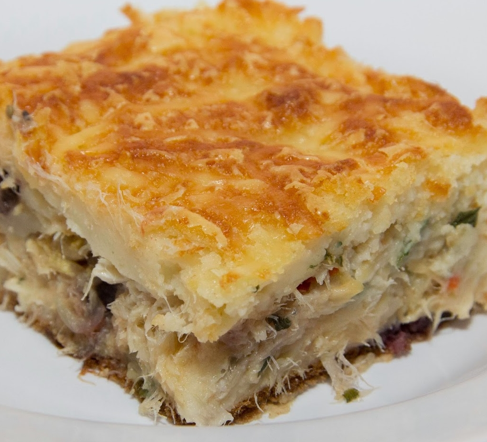

Receita do dia: Bolo de bacalhau com crispy de queijo
Ingredientes:
500g de farinha de milho em flocos
3 ovos caipiras
400 ml de leite de coco
300g de bacalhau fresco
2 tomates
1 cebola média
200g de mussarela ralada
50g de queijo parmessão ralado
cheiro verde à gosto
modo de preparo
adicione o bacalhau na panela untada de azeite